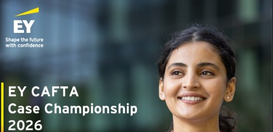

CASE CHAMPIONSHIP • CONSULTING • TREASURY
EY CAFTA Case Championship 2026
Top 15 Teams
Competed in a national case championship focused on treasury transformation, strategy and execution. Worked in a three-member team to develop a solution addressing financial and treasury challenges for GCPL.
My contribution focused on researching banking structures, overseas connections and cash pooling opportunities. I also helped integrate the team's research, coordinate timelines and shape the final cost-reduction proposal.